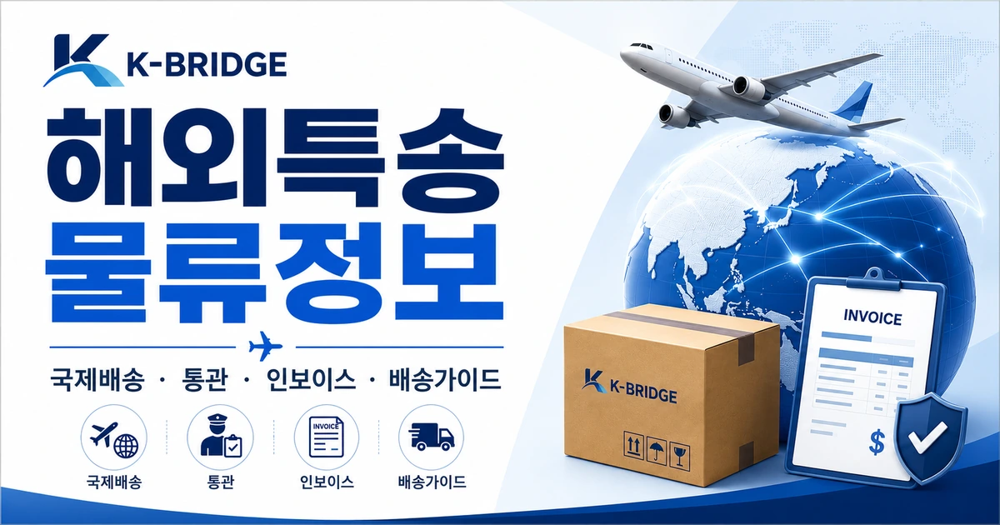
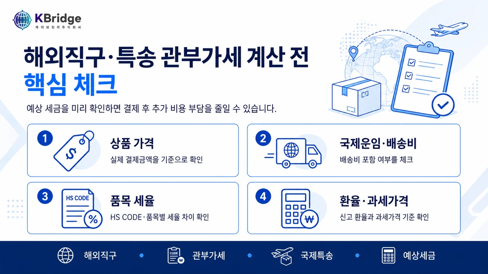
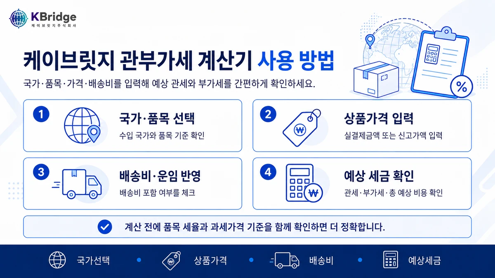
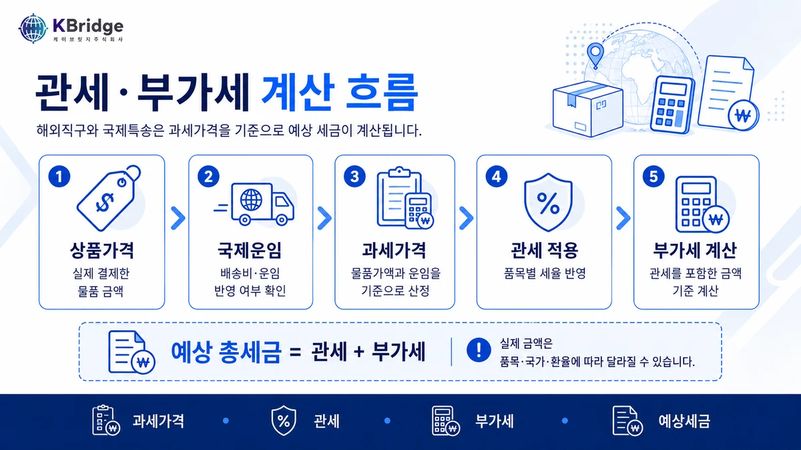

해외직구·해외특송 관부가세 계산기, 결제 전에 먼저 확인하세요
해외직구나 해외특송으로 물품을 받을 때 실제 부담해야 하는 금액은 상품 가격만으로 결정되지 않습니다. 상품가, 해외 배송비, 과세가격, 관세율, 부가세를 함께 확인해야 예상 비용을 더 정확하게 볼 수 있습니다.

해외직구 결제 전 세금이 얼마나 나올지 궁금한 분, 해외특송으로 샘플이나 개인 물품을 받을 예정인 분, 그리고 구매대행·소량 수입 전 예상 비용을 미리 확인하고 싶은 분들을 위한 안내입니다.

01관부가세는 결제 후가 아니라 결제 전에 확인해야 합니다
해외직구를 할 때 많은 분들이 상품 가격과 국제 배송비만 보고 구매를 결정합니다. 하지만 국내 도착 후 통관 과정에서 관세와 부가세가 발생하면, 실제 구매 비용은 예상보다 높아질 수 있습니다.
특히 해외특송은 빠르게 도착하는 장점이 있지만, 세금이 발생하는 경우 수취인이 납부해야 통관과 배송이 진행됩니다. 그래서 구매 전 단계에서 “상품가 + 배송비 + 예상 관부가세”를 함께 보는 것이 중요합니다.
02해외직구와 해외특송에서 확인해야 하는 비용 구조
해외에서 물품을 받을 때 비용은 단순히 상품 가격 하나로 끝나지 않습니다. 아래 항목을 함께 확인해야 실제 부담 금액에 가까워집니다.
| 구분 | 의미 | 확인 포인트 |
|---|---|---|
| 상품 가격 | 해외 쇼핑몰 또는 판매자에게 결제한 물품 금액 | 할인 후 실제 결제금액, 통화 단위, 수량을 확인합니다. |
| 해외 배송비 | 판매국에서 한국까지 이동하는 국제 운송비 | 배송비가 별도 청구되는지, 상품가에 포함되어 있는지 확인합니다. |
| 과세가격 | 세금을 계산할 때 기준이 되는 금액 | 상품가, 운송비, 보험료 등이 기준에 따라 반영될 수 있습니다. |
| 관세 | 품목별 관세율을 적용해 계산되는 세금 | 품목에 따라 세율이 다르므로 대략적인 품목 구분이 필요합니다. |
| 부가세 | 수입 단계에서 부과되는 부가가치세 | 관세가 있는 품목은 관세까지 포함된 기준으로 부가세가 계산될 수 있습니다. |
같은 금액의 물품이라도 품목이 무엇인지, 배송비가 얼마인지, 통관 방식이 어떻게 적용되는지에 따라 실제 세금은 달라질 수 있습니다. 그래서 계산기는 “정확한 확정 세액”보다 구매 전 예상 비용을 빠르게 확인하는 도구로 활용하는 것이 좋습니다.
03관세와 부가세는 이런 흐름으로 계산됩니다
관부가세 계산의 핵심은 과세가격입니다. 과세가격을 기준으로 관세를 계산하고, 이후 부가세 계산 기준에 관세가 함께 반영되는 구조로 이해하면 쉽습니다.

- 1단계 상품 가격과 해외 배송비를 확인합니다.
- 2단계 원화 환산 기준으로 과세가격을 추정합니다.
- 3단계 품목별 관세율을 적용해 예상 관세를 계산합니다.
- 4단계 부가세 기준 금액을 확인해 예상 부가세를 계산합니다.
- 5단계 예상 관세와 예상 부가세를 합산해 총 부담액을 확인합니다.
다만 실제 통관에서는 세관의 과세 기준, 환율 적용 기준, 품목분류, 감면 여부 등에 따라 최종 세액이 달라질 수 있습니다. 따라서 계산 결과는 구매 전 참고용으로 보고, 고가 물품이나 규제 가능성이 있는 물품은 추가 확인이 필요합니다.
04케이브릿지 관부가세 계산기 사용 방법
케이브릿지 관부가세 계산기는 해외직구와 해외특송 이용자가 결제 전 예상 세금을 빠르게 확인할 수 있도록 만든 페이지입니다. 복잡한 계산식을 직접 입력하지 않아도, 기본 정보를 넣으면 예상 관세·부가세를 한눈에 확인할 수 있습니다.

입력하면 좋은 정보
- 구매 국가 또는 통화
- 상품 가격
- 해외 배송비
- 품목 또는 대략적인 카테고리
- 관세율을 알고 있다면 직접 입력
결과에서 확인할 내용
05계산 전 미리 확인하면 좋은 정보
계산기를 더 정확하게 사용하려면 아래 정보를 미리 준비하는 것이 좋습니다.
| 준비 정보 | 이유 |
|---|---|
| 상품명 | 품목에 따라 관세율이 달라지므로 단순히 “잡화”보다 실제 품명을 확인하는 것이 좋습니다. |
| 결제금액 | 할인, 쿠폰, 포인트 사용 여부에 따라 실제 신고 기준을 확인해야 할 수 있습니다. |
| 배송비 | 무료배송인지, 판매자 부담인지, 별도 국제배송비가 있는지 확인해야 합니다. |
| 수량 | 동일 품목을 여러 개 구매하면 개인 사용 목적 여부나 통관 기준에 영향을 줄 수 있습니다. |
| 통관 목적 | 개인 사용, 선물, 샘플, 판매용 여부에 따라 통관 해석이 달라질 수 있습니다. |
06자주 묻는 질문
Q1. 계산기 결과가 실제 세금과 완전히 같나요?
계산기는 입력한 정보를 기준으로 예상 금액을 보여주는 도구입니다. 실제 세액은 세관의 과세 기준, 환율, 품목분류, 통관 방식에 따라 달라질 수 있습니다.
Q2. 해외직구 물품도 배송비를 넣어야 하나요?
예상 비용을 더 현실적으로 보려면 배송비도 함께 입력하는 것이 좋습니다. 특히 국제 배송비가 별도로 청구되는 경우 실제 부담액 차이가 커질 수 있습니다.
Q3. 샘플이나 선물도 관부가세가 나올 수 있나요?
물품의 성격, 가격, 수량, 통관 목적에 따라 세금이 발생할 수 있습니다. “샘플”이나 “선물”이라는 표현만으로 무조건 면세가 되는 것은 아니므로 합리적인 가격 기재가 중요합니다.
Q4. 품목별 세율을 모르면 어떻게 해야 하나요?
우선 비슷한 카테고리 기준으로 예상 계산을 해보고, 고가 물품이나 세율 차이가 큰 품목은 HS CODE 또는 통관 전문가 확인을 권장합니다.
해외직구·특송 전 예상 관부가세를 먼저 확인해보세요
결제 전 예상 세금을 확인하면 실제 구매 비용을 더 정확하게 판단할 수 있습니다. 해외직구, 샘플 수령, 해외특송 이용 전 케이브릿지 계산기를 활용해보세요.
관부가세 계산기 바로가기